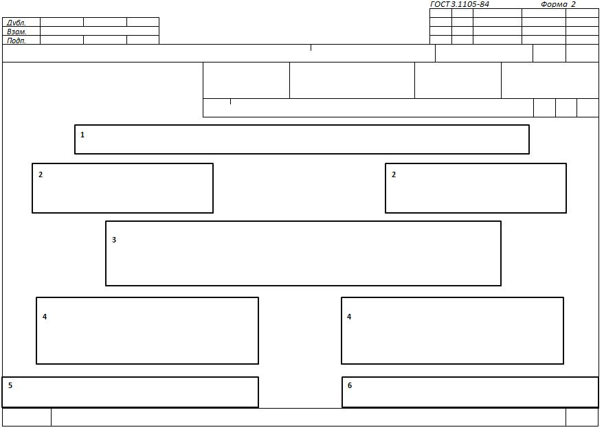
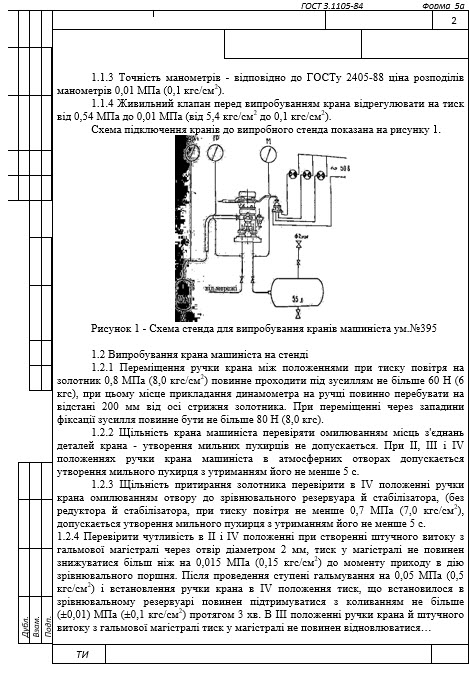

4.7 Форми й правила оформлення документів загального призначення (ГОСТ 3.1105-84)
4.7.1
Форми
й правила оформлення титульного листа
Титульний
лист (ТЛ) застосовують при оформленні:
- комплекту
технологічних документів (далі - комплекту документів) на окремі технологічні
процеси (операції), спеціалізовані по методах виготовлення або
ремонту;
- комплекту
технологічної документації (далі - комплекту документації) на технологічні
процеси виготовлення або ремонту виробів і (або) їхніх складових
частин;
- окремих
технологічних документів (далі - документів), якщо вони мають самостійне
застосування, наприклад відомість матеріалів (ВМ), відомість оснащення (ВО) і
т.п.
ТЛ
є першим листом комплекту технологічних документів
(документації).
ТЛ
варто оформляти на формах 1- 4. Форму 2 застосовують для комплекту документів
(документації), виконаних на форматі А4 з горизонтальним розташуванням поля
підшивки (або з перевагою документів, виконаних на такому форматі).
Форми ТЛ мають поля, у які вноситься певна інформація, розташування полів на формі ТЛ наведені на рисунку 4.2.

Рисунок
4.2 - Розташування інформаційних полів на формі ТЛ
На
ТЛ варто вказувати:
на полі 1 - найменування міністерства або відомства, у систему якого входить організація (підприємство), що розробило даний комплект (комплекти) документів (документації), наприклад:
МІНІСТЕРСТВО ОСВІТИ І НАУКИ УКРАЇНИ
Допускається записувати нижче найменування міністерства або відомства, у яке входить організація (підприємство), що розробило даний комплект (комплекти) документів (документації), наприклад:
ДНІПРОПЕТРОВСЬКИЙ КОЛЕДЖ ЗАЛІЗНИЧНОГО ТРАНСПОРТУ ТА ТРАНСПОРТНОЇ ІНФРАСТРУКТУРИ
на
полі 2 - у лівій частині поля - посада й підпис особи, що узгодили комплект(ти)
документів (документації) від замовника із вказівкою, при необхідності,
найменування (позначення) відповідної організації; у правій частині поля -
посада й підпис особи, що утвердили комплект(ти) документів (документації).
на
полі 3 - найменування комплекту документів (документації) або найменування виду
документа.
Запис
даних на полі 3 варто виконувати в наступному порядку:
- на першому рядку прописними буквами - найменування комплекту документів (документації) або окремого виду документа, наприклад:
КОМПЛЕКТ
ТЕХНОЛОГІЧНОЇ ДОКУМЕНТАЦІЇ
або
КОМПЛЕКТ
ДОКУМЕНТІВ
або
ВІДОМІСТЬ МАТЕРІАЛІВ
- на другому й наступному рядках малими літерами - для комплекту технологічної документації - вказівка загального поняття виготовлення або ремонту виробу (деталей, складальних одиниць) без вказівки застосовуваного методу, наприклад:
КОМПЛЕКТ
ТЕХНОЛОГІЧНОЇ ДОКУМЕНТАЦІЇ
ремонту вузла
- для
комплекту документів на технологічний процес (операції) - найменування (або
абревіатуру) виду технологічного процесу (операції) по організації виробництва,
наприклад одиничний технологічний процес (ЕТП), типовий (груповий) технологічний
процес ТГП (ГТП), типова (групова) технологічна операція ТО (ГО) і найменування
основного технологічного методу, застосовуваного при виготовленні (ремонті)
виробів і (або) їхніх складових частин, наприклад:
КОМПЛЕКТ
ДОКУМЕНТІВ
на
груповий технологічний процес електролітичного покриття
або
КОМПЛЕКТ
ДОКУМЕНТІВ
на ГТП електролітичного покриття
Допускається:
- виконувати
запис на другому й наступному рядках прописними буквами;
- не
вказувати найменування (або абревіатуру) виду технологічного процесу по його
організації для одиничних технологічних процесів:
- указувати
в дужках варіант виконання виробів і (або) їхніх складових
частин.
на
полі 4 - у лівій частині поля - посади й підписи осіб, що підтвердили узгодження
комплекту документів (документації), окремого виду документа з підрозділами
підприємства (організації), відповідальними за окремі технологічні методи,
застосовувані при виготовленні (ремонті) виробів і (або) їхніх складових частин,
наприклад головного металурга, головного зварника й т.п.; у правій частині поля
- посади й підписи осіб, відповідальних за розробку комплекту (комплектів)
документів (документації) або окремого виду документа. Праворуч від кожного
підпису проставляють ініціали й прізвище особи, що підписали документ, а нижче
підпису - дату підписання.
З
метою виключення дублюванні інформації на поле 4 виносять підписи відповідальних
осіб, що не ввійшли в основний напис основного документа, наприклад при
наявності в маршрутній карті підпису керівника технологічного бюро цей підпис на
ТЛ виносити не слід.
Запис
даних на полі 4 допускається виконувати в одну або два рядки.
на
полі 5 - номер акту й дату впровадження технологічного процесу (операції), що
свідчить про впровадження комплекту документів (документації) у
виробництво.
на
полі 6 - оцінка про відповідність комплекту (комплектів) документів
(документації) на технологічні процеси (операції) окремим «Положенням» або
«Посібник», що діють у галузях промисловості.
Приклад оформлення титульного листа наведений на рисунку 4.3.
Рисунок 4.3 - Приклад оформлення титульного листа на формі 2.
4.7.2
Форми й правила оформлення технологічної
інструкції
Документ
призначений для опису технологічних процесів, методів і прийомів, що
повторюються при виготовленні або ремонті виробів (складових частин виробів),
правил експлуатації засобів технологічного оснащення. Застосовується з метою
скорочення обсягу розроблювальної технологічної
документації.
Для
розробки ТИ варто застосовувати форми 5 і 5а.

Рисунок
4.4 - Форми технологічної інструкції (заголовний і наступний
листи)
ТИ
застосовують для опису:
- технологічних
процесів, що мають безперервний характер дії;
- технологічних
процесів, спеціалізованих по окремих методах, застосовуваним для виготовлення
або ремонту виробів і (або) їхніх складових частин, форми документів яких не
встановлені стандартами ЕСТД;
- роботи,
що мають загальний і повторюваний характер, незалежно від складу виготовлених
або ремонтованих виробів і (або) їхніх складових частин;
- правил
експлуатації засобів технологічного оснащення;
- фізичних
і хімічних явищ, що виникають при виконанні окремих технологічних
операцій;
-
настроювальних
і регулювальних робіт і т.п.
Правила
оформлення ТИ визначаються її призначенням.
Опис
у ТИ варто виконувати в технологічній послідовності виконання
дій.
При
розробці ТИ варто передбачати вступну частину, у якій повинна бути відбита
область поширення й призначення даного документа.
Залежно
від змісту текст ТИ може бути розбитий на розділи й
підрозділи.
З
метою зручності внесення змін і обробки інформації, що приводиться в ТИ,
допускається вводити графи для вказівки нумерації рядків аналогічно формам
МК.
Для
скорочення складу документів, застосовуваних при розробці ТИ,
допускається:
- замість
ТЛ застосовувати форму 5 ТИ. при цьому інформацію, характерну для ТЛ, розміщати
по всьому полю документа або тільки у верхній частині поля документа із
введенням, при необхідності, даних, що втримуються на полях 4 - 6, залишаючи
нижню частину для запису основного змісту ТИ;
-
виконувати графічні ілюстрації, таблиці безпосередньо на формах ТИ.Приклад
оформлення ТИ наведений на рисунку 4.5.

Рисунок
4.5 - Приклад оформлення технологічної інструкції
4.7.3
Форми й правила оформлення карти ескізів
КЭ
застосовують для розробки графічних ілюстрацій, таблиць до текстових
документів.
Для розробки КЭ варто застосовувати форми 7 і 7а - для формату А4 з горизонтальним розташуванням поля підшивки.
Рисунок 4.6 - Форми карт ескізів (заголовний і наступний листи)
До
графічних зображень ставляться ескізи на вироби або їхні складові частини,
ескізи на технологічні установки й позиції, технологічні схеми (кінематичні,
електричні, гідравлічні й т.д.), графіки й т.п.
Графічні
зображення виконуються з метою розширення й поліпшення сприйняття інформації до
технологічних документів.
Ескізи
варто виконувати з дотриманням масштабу або без дотримання масштабу, але зі
зразковим дотриманням пропорцій, із вказівкою для виробів, складальних одиниць і
деталей елементів, оброблюваних поверхонь і т.п.
Зображувати
виріб на ескізах необхідно в робочому положенні при виконанні операції. Якщо
ескіз виробу розроблений до декількох операцій, допускається зображувати виріб
на ескізі в неробочому положенні.
Зображення
виробу на ескізі повинне містити розміри, граничні відхилення, позначення жорсткості, баз,
опор, затисків і установочно-затискних пристроїв, необхідних для виконання
операцій для яких розроблений ескіз.
Кількість
ескізів і схем, які пояснюють операції, установлює розроблювач
документів.
На
ескізах до операцій всі розміри або конструктивні елементи оброблюваних
поверхонь умовно нумерують арабськими цифрами. Номер розміру або конструктивного
елемента оброблюваної поверхні проставляють в окружності діаметром 6-8 мм і
з'єднують із розмірної або виноскою. При цьому розміри, граничні відхилення
оброблюваної поверхні в тексті змісту операції або переходу не
вказують.
Для
позначення позицій і осей допускається застосовувати римські
цифри.
При
виконанні в одному документі декількох ескізів до різних операцій одного
технологічного процесу допускається наскрізна нумерація оброблюваних поверхонь
або конструктивних елементів. При цьому номера однієї й тої ж оброблюваної
поверхні або конструктивного елемента, які зустрічаються в різних операціях,
можуть бути неоднаковими.
Оброблювані
поверхні виробу на ескізі варто обводити лінією товщиною 2s. При розробці одного
ескізу на технологічний процес або на кілька операцій допускаються
оброблювані поверхні виробу не обводити лінією товщиною 2s.
Технічні
вимоги варто поміщати на вільній частині документа праворуч від зображення виробу або під
ним.
Таблиці
й графіки, що пояснюють зображення виробу, варто поміщати на вільній частині
документа праворуч від зображення виробу.
Якщо
зображення виробу на ескізі ставиться до декількох операцій технологічного
процесу, то номера цих операцій варто вказувати над зображенням виробу й
підкреслювати.
Допускається
не записувати всі номери операцій, якщо зображення ставиться до декількох
послідовних операцій. Наприклад, зображення виробу на ескізі ставиться до 005,
010, 015 і 020 операцій, у цьому випадку можна записати
005-020.
Якщо
на поле для графічної інформації знаходяться кілька окремих ескізів для різних операцій
технологічного процесу, то над кожним ескізом варто вказати номер операції й
підкреслити.
При
розробці КЭ графу 3 основного напису не заповнюють.
При
розробці однієї КЭ до декількох операцій графи 8-11 основного напису не
заповнюють.
Для
скорочення процедури оформлення допускається застосовувати замість першого або
заголовного листа КЭ наступні листи, якщо КЭ й основний технологічний документ
розробляється одним виконавцем. У цьому випадку на КЭ в графі 4 основного напису
варто проставляти позначення того документа, до якого КЭ ставиться із
застосуванням наскрізної нумерації листів у межах даного
документа.
Приклад оформлення КЭ наведений на рисунку 4.7
Рисунок 4.7 - Приклад оформлення карт ескізів